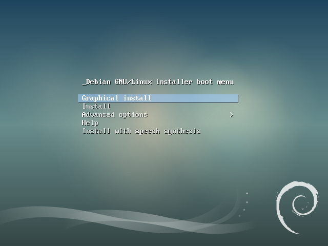
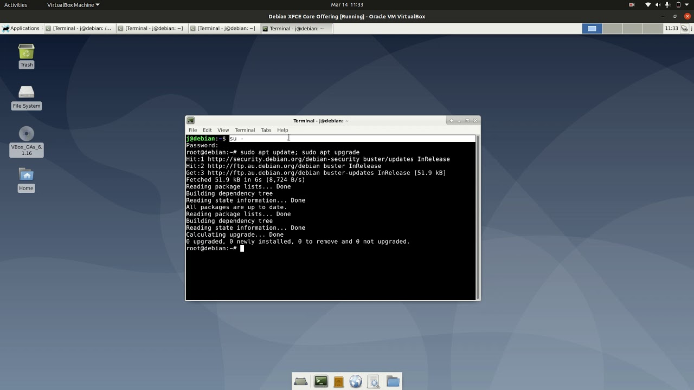

Projet 1 : Installation de Debian
Création d'une machine virtuelle et installation complète de Debian 11 avec configuration et déploiement d’applications.
BUT Informatique – IUT2 de Grenoble2022 – 2025


À propos du projet
Ce projet consistait à créer une machine virtuelle et à y installer Debian 11. J'ai recherché la version la plus récente de Debian, procédé à son installation puis configuré le système d'exploitation. J’ai ensuite installé les applications nécessaires telles que Firefox.
Mon rôle : Recherche, installation complète, configuration système, gestion des utilisateurs et optimisation de l'environnement de développement.
Compétences développées :
- Création de machine virtuelle
- Installation de Debian 11
- Configuration d’un OS multitâches et multiutilisateur
- Installation d’applications complémentaires
- Analyse des besoins techniques et autonomie